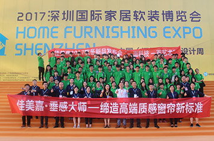
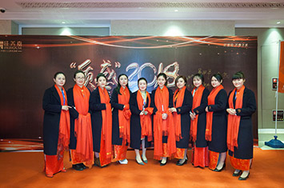

<div class="jo-learn">
    <div class="tx1 tac">佳美嘉垂感大师非常注重每一位事业合伙人的综合发展及整体提升。<br>
公司将不定期举办各项专题培训、开展拓展运动、组织团建活动，不断丰富员工的日常生活。</div>
    <div class="ab-ec">
        <div class="aec-list aec-arrow u-slick">
            <div class="item"><a href="news-detail.html" class="j-learn-a ma scapic"><div class="pai"></div><p class="nowti">团队建设活动名称描述测试文字</p></a></div>
            <div class="item"><a href="news-detail.html" class="j-learn-a ma scapic"><div class="pai"></div><p class="nowti">团队建设活动名称描述测试文字</p></a></div>
            <div class="item"><a href="news-detail.html" class="j-learn-a ma scapic"><div class="pai"></div><p class="nowti">团队建设活动名称描述测试文字</p></a></div>
            <div class="item"><a href="news-detail.html" class="j-learn-a ma scapic"><div class="pai"></div><p class="nowti">团队建设活动名称描述测试文字</p></a></div>
            <div class="item"><a href="news-detail.html" class="j-learn-a ma scapic"><div class="pai"></div><p class="nowti">团队建设活动名称描述测试文字</p></a></div>
        </div>
    </div>
    <script>
        $('.aec-list').slick({
            slidesToShow: 3,
            slidesToScroll: 3,
            responsive: [{
                breakpoint: 862,
                settings: {
                    slidesToShow: 2,
                    slidesToScroll: 2
                }
            },
            {
                breakpoint: 482,
                settings: {
                    slidesToShow: 1,
                    slidesToScroll: 1
                }
            }
            ]
        });
    </script>
</div>